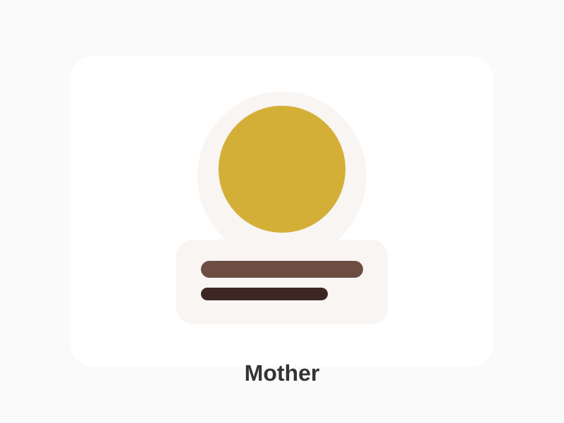
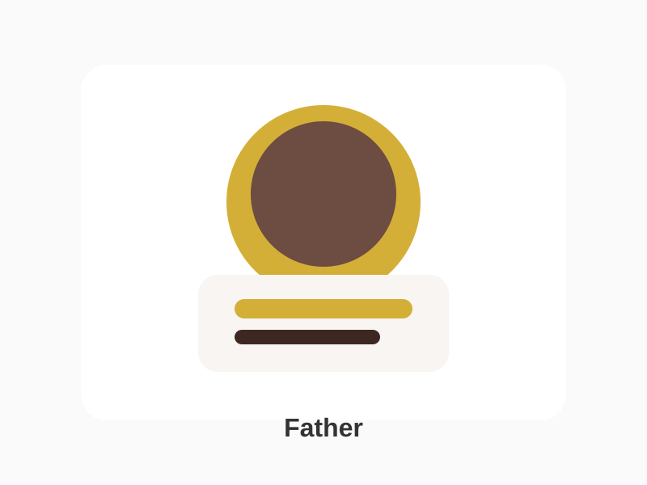

Biography
Grace Johnson has spent her life teaching, encouraging, and uplifting everyone around her. She brings warmth and grace wherever she goes.

She is the heart of the home and the gentle soul that turns ordinary moments into cherished memories.
“A mother’s love is the quiet light that never fades.”
Grace Johnson has spent her life teaching, encouraging, and uplifting everyone around her. She brings warmth and grace wherever she goes.
Dedicated years to education, led community initiatives, and created a home full of comfort and care for all.
Cooking, writing, listening to music, and spending quiet time with loved ones.
She is the most caring, loving, selfless, supportive, and wonderful mother whose kindness has shaped our lives in beautiful ways.

